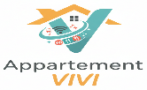

Pistes de logo
La piste F suit votre exemple (style Uber, symbole d’appartement, couleurs du site) ; D et E suivent le style Uber ; A, B et C sont les propositions précédentes. Chacune est montrée en grand, sur fond sombre, en petit (icône d’onglet, application) et dans l’en-tête du site.
Logo actuel
Extrait du cahier des charges.

F · L’immeuble en V, style Uber
Un V en blocs pleins : la branche gauche descend en diagonale, la branche droite est un immeuble avec ses fenêtres et sa porte orange. Le nom VIVI, très gras, et la mention « Appartements meublés. » à côté, comme dans votre exemple. Couleurs du site : turquoise, orange pour la porte.
meublés.
meublés.
meublés.Connexion
D · Style Uber, noir et blanc
Le nom seul, en capitale et minuscules, très gras et serré, d’une seule couleur. Pas de pictogramme ni de dégradé : la force vient de la simplicité. L’icône d’application est le nom en blanc sur un carré noir.
E · Style Uber, turquoise foncé
Le même mot, dans le turquoise le plus foncé de VIVI au lieu du noir. Même sobriété, mais la marque garde sa couleur ; l’orange reste réservé aux boutons d’action du site.
Pistes précédentes
A · Le toit et le V
Un toit orange posé sur le V de VIVI : la maison et l’initiale forment un losange, lisible même tout petit.
B · Le repère
Un repère de carte qui abrite une maison, sa porte en orange : « un logement près de vous ». Plus illustratif, très parlant pour le grand public.
C · Le mot seul
Le nom en minuscules, sans pictogramme : le point du premier i devient un petit toit orange. Sobre et moderne ; l’icône d’application reprend le « v » et son toit.
Pistes A et B : le nom est composé en Outfit, la police des titres du site. Piste C : le mot est dessiné. La version retenue sera finalisée et livrée en SVG et en PNG.